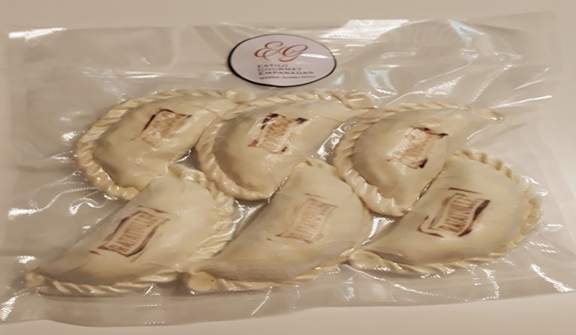

inicio
gustos
información
delivery
contacto
cocción
1. sacar empanadas del freezer.
2. precalentar el horno en 180°C.
3. quitarles el envoltorio de plástico.
4. llevarlas al horno por 15 o 20 min dependiendo de tu horno.
5. sacalas y a disfrutar de las mejores empanadas!

chef
Chef Rodrigo Alonso Picco - Villa Ballester
Título: Técnico Superior en Gastronomía - Instituto Gato Dumas
Título: Cocinero - Uthgra San Martín
Pasantía: Barcelona (España) 6 meses
Pasantía: Amalfi (Italia) 6 meses
Jefe de cocina en Arambru
Cocinero en Tegui